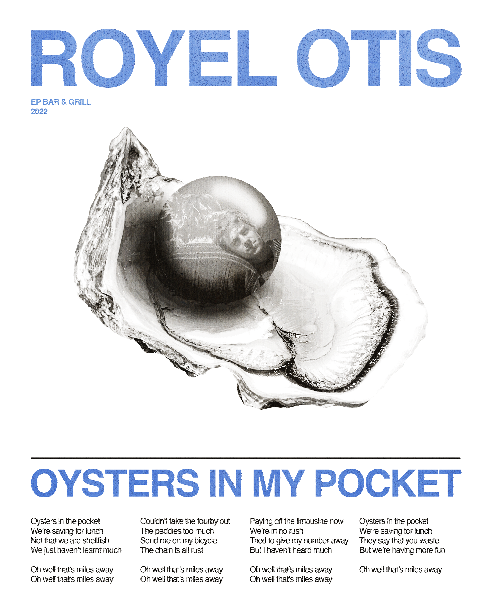

A poster created to explore creating graphic elements relevant to the content, in this case a poster design for a Royel Otis song. Using the song's imagery of oysters and pearls to represent the brand, the pearl was created as a 3-dimensional element in Adobe Illustrator with the band image edited onto the pearl in Photoshop. The image asset from Unsplash was further edited in Photoshop. The poster was also an exploration in micro-typography, typesetting the song's lyrics within the poster while still maintaining a hierarchy.
